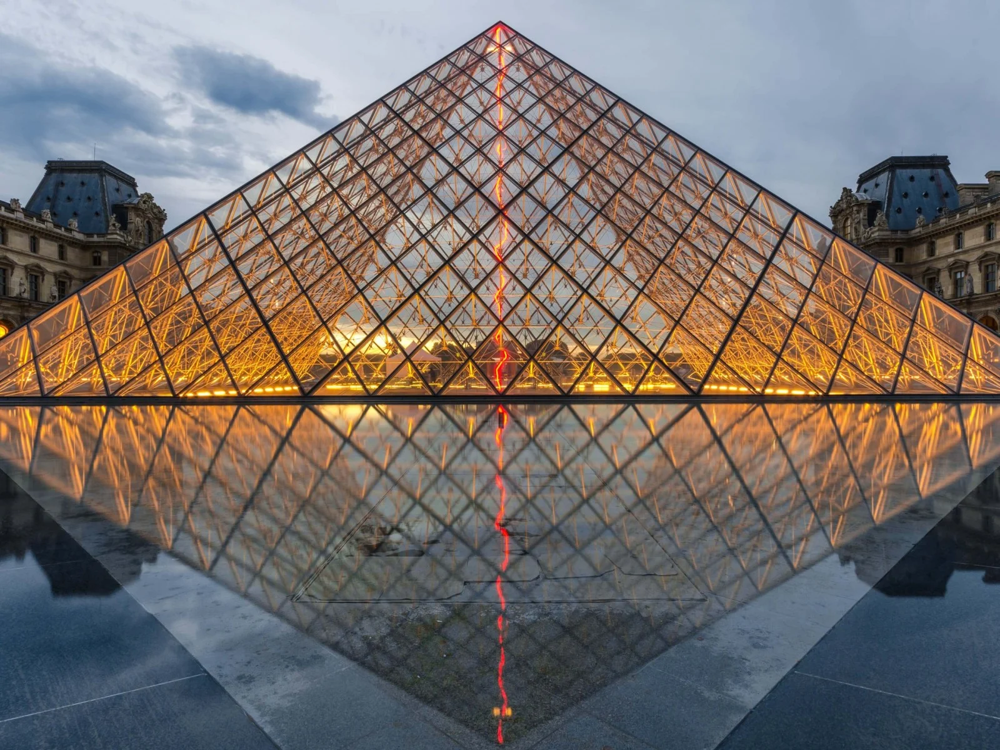
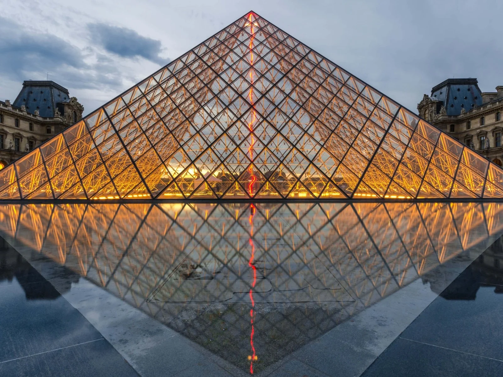

Le Musée du Louvre est l'un des plus grands musées du monde, situé en plein centre de Paris dans le 1er arrondissement. Près de 35 000 objets, de la préhistoire au 21e siècle, y sont exposées sur une superficie de 60 600 m². Avec plus de 8 millions de visiteurs chaque année, il est le musée le plus visité au monde.
Le musée est situé dans le Palais du Louvre, jadis forteresse construite à la fin du 12ème siècle sous Philippe II. Les vestiges de la forteresse sont visibles dans le sous-sol du musée. Le bâtiment a été agrandi plusieurs fois pour former l'actuel Palais du Louvre. En 1682, Louis XIV choisit le château de Versailles pour y loger, laissant le Louvre principalement comme un endroit pour afficher la collection royale. En 1692, le bâtiment a été occupé par l'Académie des Inscriptions et Belles-Lettres et l'Académie Royale de Peinture et de Sculpture, qui a tenu la première d'une série de salons en 1699. L'Académie est restée au Louvre pendant 100 ans. Pendant la Révolution française, l'Assemblée Nationale a décrété que le Louvre devait être utilisé comme un musée, afin d'afficher les chefs-d'œuvre de la nation.
Le musée a ouvert le 10 Août 1793 avec une exposition de 537 peintures, la majorité des travaux étant royal et les biens confisqués à l'église. En raison de problèmes structurels de l'immeuble, le musée a été fermé en 1796 jusqu'en 1801. La taille de la collection a augmenté sous Napoléon et le musée a été rebaptisé le Musée Napoléon. Après la défaite de Napoléon à Waterloo, de nombreux ouvrages saisis par ses armées ont été restitués à leurs propriétaires d'origine. La collection a été encore augmentée pendant les règnes de Louis XVIII et Charles X, et pendant le Second Empire français, le musée a gagné 20 000 pièces.
En 2008, la collection est répartie entre huit départements de conservation: Antiquités égyptiennes, Antiquités orientales, Antiquités grecques, étrusques et romaines, Arts de l'Islam, sculpture, les arts décoratifs, des peintures, estampes et dessins.


 
